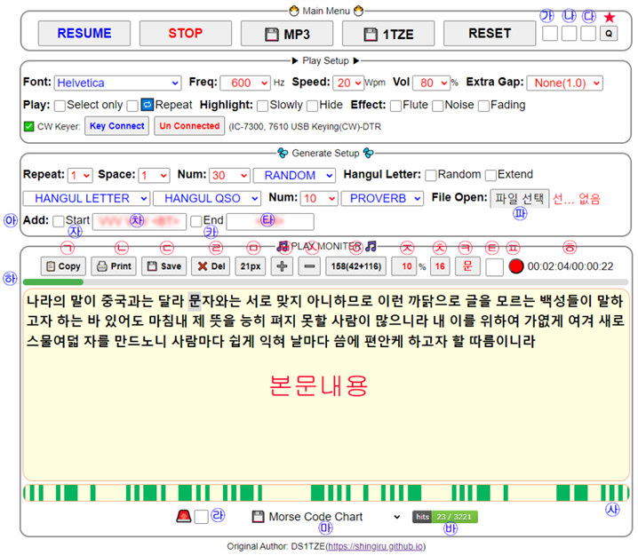

| Morse Trainer 간단 사용 설명서 |
|  |
| ㉠ 클릭시 본문내용을 클립보드에 복사합니다. |
| ㉡ 클릭시 본문내용을 새문서로 창을 띄웁니다. |
| ㉢ 클릭시 본문내용을 txt 파일로 저장합니다. |
| ㉣ 클릭시 본문내용을 삭제합니다. |
| ㉤ 본문내용의 현재 글자 크기를 표시하며, 마우스로 클릭하면 기본값 21px로 복원합니다. |
| ㉥ 클릭시 본문내용의 글자 크기를 3px 크게 합니다. |
| ㉦ 클릭시 본문내용의 글자 크기를 3px 작게 합니다.(최소크기 한계 14px) |
| ㉧ 본문내용의 글자수, 빈칸수, 순 글자수를 표시합니다. 총글자수(빈칸수+순글자수) |
| ㉨ PLAY되고 있는 현재의 위치를 전체 글자수에 대한 비율로 표시합니다. |
| ㉩ PLAY중인 글자가 전체 글자에서 위치한 자리값을 표시합니다. |
| ㉪ PLAY중인 글자를 표시합니다. 클릭시 본문내용을 덮는 화면이 나타나서 PLAY중인 글자가 크게 표시되며 다시 한번 클릭하면 사라집니다. 글자가 크게 표시되고 있는 상태에서 본문내용 아무데나 클릭하면 Main Menu의 PLAY 버튼을 대신 클릭해줍니다.(PLAY, PAUSE, RESUME 토글) |
| ㉫ 클릭하여 체크가 된 상태에서 PLAY버튼을 누르면 자동으로 현재 재생중인 글자가 본문내용을 덮는 화면이 나타내어 크게 표시되며, PLAY가 완료되면 사라집니다. |
| ㉬ 현재 재생되고 있는 모스코드의 시그널을 적색으로 표시합니다.클릭시 Play Setup 창과 Generate Setup 창을 숨기며, 다시 클릭하면 두 창을 표시합니다. |
| ㉭ 현재까지의 PLAY된 누적시간/현재 PLAY되고 있는 시간을 표시합니다. Main Menu의 RESET버튼을 누르면 초기화됩니다. |
| ㉮ 클릭하여 체크하면 Play Setup 창을 숨기며, 다시 클릭하여 체크 해제하면 보이게 합니다. |
| ㉯ 클릭하여 체크하면 Generate Setup 창을 숨기며, 다시 클릭하여 체크 해제하면 보이게 합니다. |
| ㉰ 클릭하여 체크하면 Play Moniter 창을 숨기며, 다시 클릭하여 체크 해제하면 보이게 합니다. |
| ★ 여기를 클릭하면 프로그램 주소링크가 입력된 QR코드를 표시하며, 다시 클릭하면 숨김니다. 이 QR코드를 휴대폰 카메라로 비추면 프로그램 주소로 바로 이동할 수 있습니다. |
| ㉱ 클릭하여 체크하면 적색으로 화면이 점멸하면서 10Wpm 속도로 SOS를 PLAY하며, 다시 클릭하여 체크 해제하면 중지합니다. |
| ㉲ 이곳을 클릭하면 모오스 코드 도표, Tree 파일, 프로그램 설명서를 다운로드할 수 있습니다. |
| ㉳ 이곳을 클릭하면 Main Menu의 PLAY 버튼을 대신 클릭해줍니다.(PLAY, PAUSE, RESUME 토글됨) |
| ㉴ Dit Dah가 표시되고 있는 바를 누르면 ㉪을 누른것과 같은 기능을 합니다. |
| ㉵ 이곳(Add:)을 클릭하면 현재 본문내용의 앞부분에 ㉴의 내용을, 끝부분에 ㉵의 내용을 즉시 추가합니다. |
| ㉶ Start를 클릭하여 체크해두면 본문내용을 생성할때 ㉷에 기재된 내용을 본문내용의 시작부분에 추가합니다. |
| ㉷ Start를 클릭하여 체크해두면 이곳의 내용을 본문내용의 시작부분에 추가합니다. |
| ㉸ End를 클릭하여 체크해두면 ㉹의 내용을 본문내용의 끝부분에 추가합니다. |
| ㉹ End를 클릭하여 체크해두면 이곳의 내용을 본문내용의 끝부분에 추가합니다. |
| ㉺ 클릭하면 로컬시스템의 파일을 불러와서 본문내용에 입력할 수 있습니다. 확장자가 *.txt인 파일만 선택이 가능합니다. |
| ㉻ PLAY되고 있는 본문내용 전체에 대한 현재의 진행율을 막대길이로 표시합니다. |